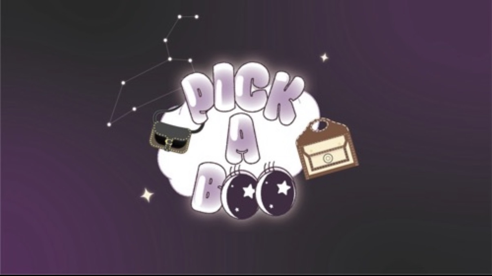
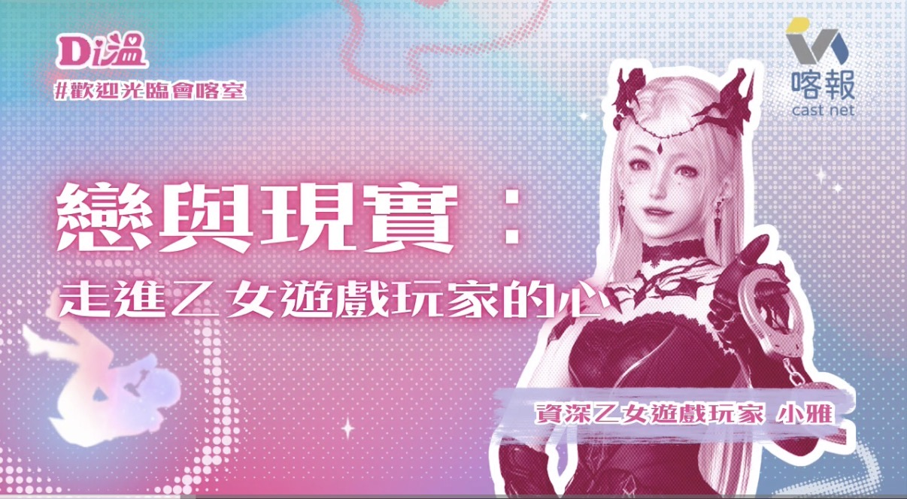

Xplore 社群經營與內容製作
負責 Xplore Instagram 的社群內容企劃、圖文設計與課程宣傳，透過不同形式的貼文和短影音分享自我探索與設計人生的理念，並讓更多學生認識 Xplore 的課程與活動。
ig連結負責 Xplore Instagram 的社群內容企劃、圖文設計與課程宣傳，透過不同形式的貼文和短影音分享自我探索與設計人生的理念，並讓更多學生認識 Xplore 的課程與活動。
ig連結
以「穿搭」與「自我探索」為主題，透過兩個系列的節目分享多元觀點與生活故事。參與節目企劃、訪綱設計、主持訪談及後製，將不同主題轉化為貼近聽眾的內容。
收聽Podcast
以Z世代的數位陪伴與乙女遊戲文化為主題，透過人物訪談探索玩家的情感經驗與想法。負責節目企劃、訪綱設計、主持及音訊製作。作品榮獲喀報獎「最佳作品獎」。
收聽Podcast